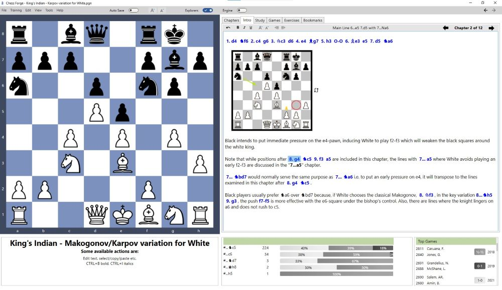

Workbooks
Chess Forge organizes its content as the, so called, workbooks. Physically, workbooks are just text
files in the PGN format with some
Chess Forge specific extensions.
Those extensions, include extra tags identifying the file as a ChessForge workbook, extra headers
identifying PGN "game" types as Studies, Games or Exercises in the Chess Forge's context etc.
Each workbook contains one or more chaters and within chapters:
- An optional Intro
- A Study
- Any number of Games
- Any number of Exercises
You can create a new workbook from scratch or start by importing a PGN file. Then you can edit it
using Chess Forge's unique capabilities.
General Editing
This section applies to Studies, Games and Exercises i.e. views that display a variation tree.
In each such view, there is always one selected move/position indicated by the highlighting
and reflected on the main chessboard.
If there is no highlighted move/position, it means that the starting position has been selected. In
particular, that will be the case when you open a Study for the first time.
Most of the editing will be done by entering moves with the mouse. Moves are appended to the
currently selected one and branches
will be created where other move have already been added previously.
Managing Lines
We will refer to branches of the variation tree as lines, as per the standard chess terminology.
Lines can be selected and (coming in version 1.8) re-ordered.
Refer to the User's Manual for details.
Working with Moves and Lines
Copy/Paste Moves, Lines and Trees
A unique feature of Chess Forge as a PGN editor is the ability to copy and paste moves, lines and
trees within
the same view or across views/chapters/workbooks.
You can copy moves, lines and trees from any Chess Forge view or from any text with valid algebraic
notation (not necessarily PGN).
Select and Copy Moves
Click on any move to select it. While pressing the SHIFT key, click on another move to select the
sequence of moves
between the two moves. The selected sequence will be highlighted in blue.
Select and Copy Line
Click on any move to select it. Press CTRL-L to select the currently highlighted line.
The selection will now be bighlighted in blue.
Select and Copy Tree
Click on any move to select it. Press CTRL-A to select the variation sub-tree under the highlighted
move.
The selected sub-tree will be bighlighted in blue.

Paste Selected Moves
Navigate to the target view (variation tree) and select a move at which you want to paste the
selection.
Press CTRL-V. If the move sequence can be legally inserted at the selected move, it will be pasted.
Note that, in the example shown here, you could have selected 3.Bb5 as well.
Chess Forge checks if the moves can be pasted at the selected location or at the next ply
(it will match the side on the move in the target position and in the selection being pasted).
If we used the Copy/Paste Tree option, the end result will be as shown as in the image below.
Note that the actual move numbering does not matter. You can try pasting the moves anywhere.
If the moves cannot be legally inserted in the specified place, Chess Forge will abort the action
and flash a warning message in the Hints box
under the main chessboard.
Copy/Paste PGN Games
You can place a PGN game or even multiple games in the system cliboard and press CTRL-V when in
ChessForge.
If the program recognizes the content of the clipboard as valid PGN it will offer to add it to the
current chapter.
If the program recognizes the content as copied from a Chess Forge's PGN and it recognizes the
special Chapter or Intro tags
it will offer to add those chapters into the current workbook.
Editing Intro View
Unlike the views discussed earlier, the Introduction view (or Intro view for short) doesn't contain
a variation tree.
Instead, it's designed to provide a free-form text description and notes about the upcoming chapter.
You can format the text similarly to Microsoft Word's rich text formatting, and you can also insert
diagrams and moves for illustration purposes.

For detailed instructions, refer to the User's Manual.
Intro Editor